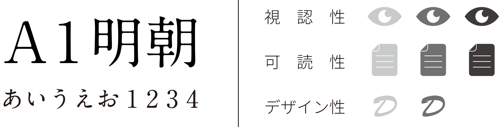
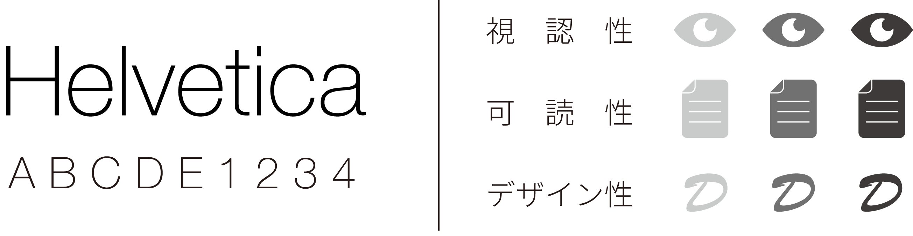

みなさんは文章を読むとき、内容ではなく「文字そのもの」に目がいったことはありますか？
お気に入りの雑誌、通学路の標識から行きつけ店のメニュー表まで、実は世の中には様々な目的と個性とを持った文字があります。 それら組み合わせによって、文字は内容を「伝える」手助けをしてくれたり、ベストな「雰囲気づくり」に貢献してくれていたりします。
今回、すごい身近な存在なのに意外に意識を向けたことがない人も多いのではと感じる「文字そのもの」について、簡単ではありますがご紹介したいと思います。 これがもし、今後の生活での新しい発見につながりましたら、とても幸いです。
INTRODUCTION FONT
■ Ming-style / 明朝体
横線よりも縦線が太く、横線のはじまりやおわり、曲り角の右肩にウロコと呼ばれる三角形がある。大人っぽさ・上品・和風などの印象を与える。

1.A1 明朝
墨だまりのような交点が印象的で、加工によって不気味さや格式ある雰囲気を作れるフォント。 漫画や雑誌など様々なシーンで使用されており、あなたのお気に入りの作品のタイトルにも使われているかも。

1.リュウミン
誠実さや清楚さを感じさせる、どんな内容でもとりあえず使っておくとそれっぽくなるフォント。クセが少なく読みやすさの確保や雰囲気づくりにはとても適してますね。
1.いにしえよりつづくもの
日本らしさや明治感あふれるひらがなのみのフォント。 漢字や数字は打てませんが、曲線のクセやひらがな独特の余白ややさしさがあり、短めのキャッチコピーやキーワードの協調にも使えそうです。
■ Gothic-style / ゴシック体
横線と縦線の太さがほぼ均一で、ウロコがほぼない。太字にはインパクト・男らしさ、細字には幾何学的・現代的などの印象がある。
1.見出しゴ
高級感や大人っぽさを出すときに使われやすい、見出しや小見出し向きのフォント。 小ぶりに作られており、様々ロゴや他の個性的なフォントとも相性が合いやすく使い勝手がいいです。
2.超極細ゴシック
最近はウェブページのトップに写真と大きめのテキストを使うことが増えていますね。 欧文に比べ違和感なく組み合わせるが難しい和文の場合でも、これなら雰囲気を壊さずに合わせられるのでとっても便利です！
3.オリエンタル
装飾が印象的でレトロな雰囲気を持ちつつも、加工すると近未来感のある軍事やロボット、ボディーアーマー風にも見せられる魅力的なフォント。 イラストと一緒に合わせて装丁やキービジュアルにも使えるかも。
■ Serif / セリフ体
「セリフ」と呼ばれる文字の線の端に飾りがついた、明朝体と特徴が似た欧文の書体。こちらも同様に高貴さやレトロを感じさせますね。
1.Times New Roman
イギリスのタイムズ紙が新聞中で使用する書体として開発した書体。長文でも読みやすく、レポート中の英語にも使うこともできますね。
2.Georgia
ふところで大振りなため、小さいサイズで使用する場合でも一定の視認性や可読性を持っています。またデフォルトフォントという点も利点の一つ。
3.Cooper
ポップなフォントの中では王道のフォント。太く、印象的な形をしているのでロゴやグラフィックの装飾素材に使えますね。
■ Sanserif / サンセリフ体
「セリフ」と呼ばれる文字の線の端につけられる飾りが「ない」（フランス語で「サン」）ことからそのままの名前で呼ばれています。 おしゃれさを保ちつつもなにか強く伝えたい内容がある、そんなときにはこちらの書体がオススメです。

1.Helvetica
欧米フォントの中でもっとも有名で、1957年のスイスで生まれてから広告から 雑誌、WEBなど幅広い分野で使用されていますね。 JR東日本の駅名看板やパナソニック、無印良品のロゴにも使用され、圧倒的な汎用性と安定感を誇っています！
2.Ailerons
丸みと独特の角が混在したスマートで繊細な印象を持つフォント。 縦に長く文頭から文末までを短くして配置できるため、目で追う量も減りパッと内容が入ってきやすいのが利点ですね。
3.Myriad
モダンで独特の味を持ちながらも、見易さを兼ね備えた有名なフォントです。 アップルの製品のロゴや小塚ゴシックの欧文部分にも使用され、非常に高い信頼性を持っていることがうかがえますね。
4.Oh! maimai!
もはやフォントの括りとしては怪しいですが、素敵な個性を持ったフォント。 歯や液体感、ポップな不気味さを演出するときには非常に効果的です。 CDジャケッのアートワークなどでも使えそうですね。
© 2015 Ryosuke Umeki Waseda university web03